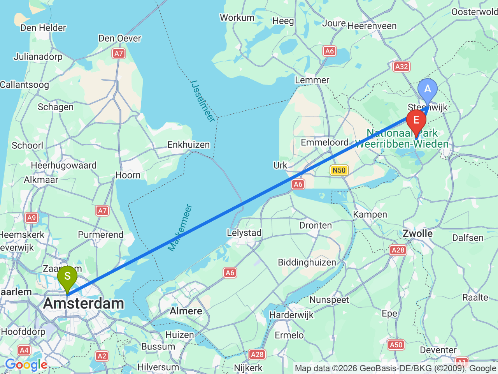
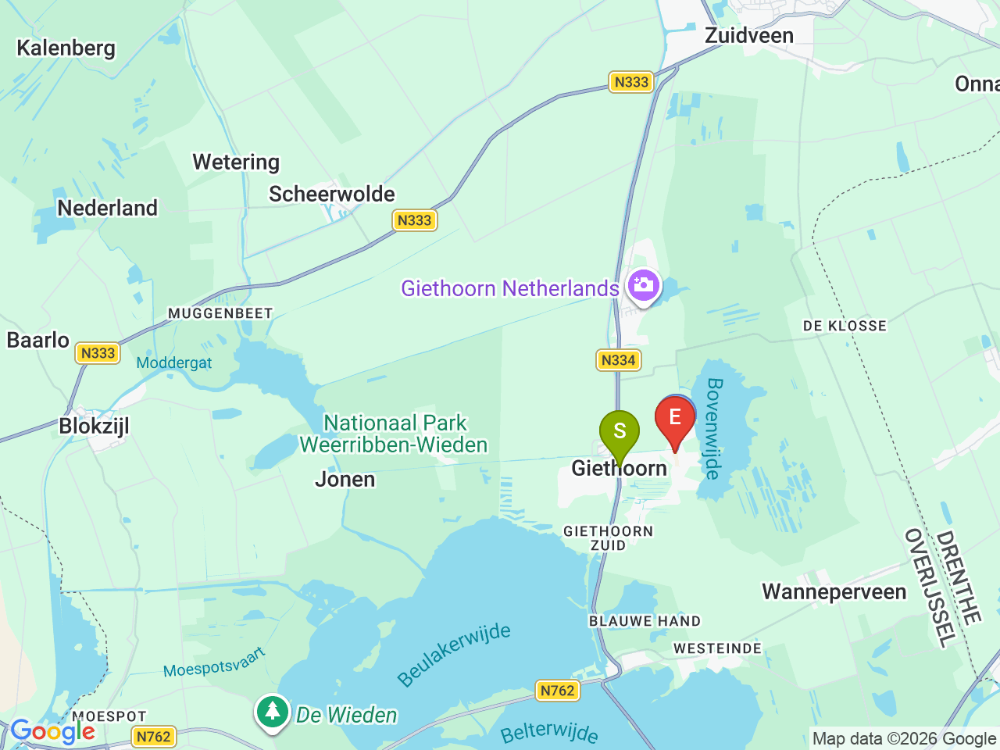
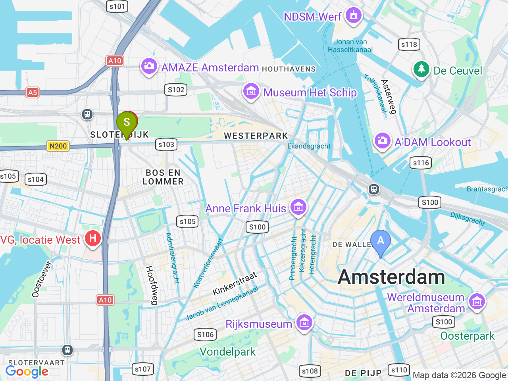

Day 04 · 2026-08-19（三）
荷蘭・阿姆斯特丹 Day 4/6
羊角村一日遊：運河、木橋與茅草屋
搭火車經轉乘前往「北方威尼斯」，划船遊運河，回程順道逛 Steenwijk 舊城
市區來回羊角村

羊角村景點區域

阿姆斯特丹市區（含飯店）

固定時間行程DAY 04
| 時間 | 地點 | 地點 (英文) | 交通方式／班次 | 價格 | 預計停留(分鐘) | 備註 |
|---|---|---|---|---|---|---|
| 羊角村 | 1Giethoorn, Netherlands | 步行10-15分鐘至Sloterdijk→火車約6分鐘至Centraal→城際火車約1.5小時至Steenwijk（通常需在 Almere Centraal 或 Lelystad Centrum 轉車一次，出發前用 NS App 確認實際班次）→70路巴士約15-25分鐘 | 約6小時（含划船、漫步） | 站牌步行15-20分鐘進入核心區域，租船處多集中在 Binnenpad 一帶；回程同路線返回，中途可順道逛 Steenwijk 舊城 |
彈性探索景點DAY 04
| 地點 | 地點 (英文) | 預計停留(分鐘) | 價格 | 備註 |
|---|---|---|---|---|
| 划船遊運河（Whisper Boat 自駕小船） | ABoat Rental Giethoorn, Binnenpad, Giethoorn | 約120-180分鐘 | 約 €30-50／艘（2-3小時，可1-6人共乘） | 電動靜音船，免駕照即可自行開，沿途欣賞茅草屋頂農舍與木橋 |
| 't Olde Maat Uus 露天博物館 | B't Olde Maat Uus, Giethoorn | 約45分鐘 | 約 €6-8 | 傳統農舍生活博物館，了解羊角村早期生活樣貌 |
| 木橋 & 茅草屋漫步 | CGiethoorn Village Center | 約60分鐘 | 免費 | 沒有馬路，運河與木橋是主要動線，隨興散步拍照 |
| Steenwijk 舊城區漫步 | DSteenwijk, Netherlands | 約75分鐘 | 免費 | 城牆遺跡(Stadswallen)、De Vlijt 風車、舊城廣場，回程轉車空檔順道逛 |
| 午餐：羊角村運河邊餐廳 | 約 €15-25／人 | 村內多間運河畔餐廳可選，划船途中順道靠岸用餐即可，餐廳尚未確定 | ||
| 晚餐：Café de Sluyswacht | FCafé de Sluyswacht, Jodenbreestraat 1, Amsterdam | 約60分鐘 | 見上方三餐資訊 | 傾斜老屋改建的運河邊小酒館，近中央車站 |
每日三餐
午餐
羊角村運河邊餐廳約 €15-25／人
村內多間運河畔餐廳可選，划船途中順道靠岸用餐即可，餐廳尚未確定
晚餐
Café de SluyswachtCafé de Sluyswacht約 €15-25／人
📍 Jodenbreestraat 1, Amsterdam傾斜老屋改建的運河邊小酒館，近中央車站，一日遊回程順路吃 stamppot / bitterballen 收尾
住宿資訊
XO Hotels Park West
📍 Molenwerf 1, 1014 AG Amsterdam